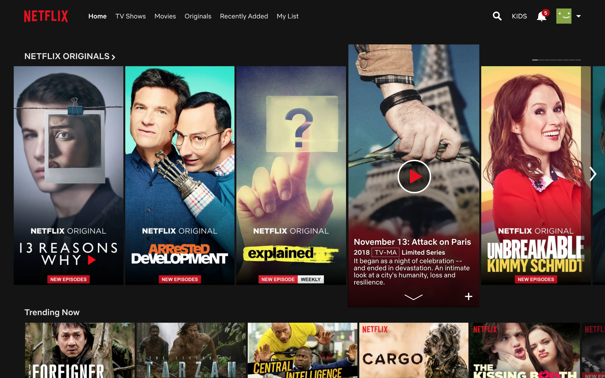

Exploring the set top experience through a new TV interface for the Netflix app
The company
Netflix is the world’s leading internet entertainment service in over 190 countries supplying TV series, documentaries and feature films across a wide variety of genres and languages.
The users
50 million plus global members.
Purpose of this assignment
This case study explores the design of the set top experience through the lens of Netflix. How can TV users navigate listings and find titles more easily than they currently do with the new Apple TV remote.
My role
Personal Project. No affiliation with Netflix.
Other team members
None
Duration
Introduction
Netflix is the world’s leading internet entertainment service with 125 million memberships in over 190 countries enjoying TV series, documentaries and feature films across a wide variety of genres and languages.
The Challenge
Once the company made the platform compatible for TV back in 2009, many companies such as Sony, Apple, Hitachi, Phillips and more have all installed a ‘Netflix’ as an option for users to watch. The challenge that arises is that when using Netflix on any TV app, the primary navigation is handled via the remote which can become extremely strenuous when digging into the catalogue to find something specific.
As anybody who has used a T.V remote even once will recognize the content on the TV is controlled by the joystick or arrows. Those four buttons allow the users to navigate the entire experience hence it was imperative that I do not change that aspect of using a remote.

The final thing to take into account is the basic Netflix experience which comprises of a landing page, a search, title information and finally the show screen. Though on the TV certain components of the website might be missing, the core features cannot be meddled with and was imperative they showcase in the redesign.
Defining the key pain points
Apple T.V first generation users had the chance to click left, right, up and down. However, with the new remote design, users are subjected to a track-pad solution which might not be intuitive enough as the four arrow keys on a traditional remote.
The problem with having only a track-pad is that users are forced to rely on gestures rather than the hard buttons. This leads to a different user behaviour that needed to be thought true from the ground up.
The menu was also very poorly hidden at the top of the screen and with the basic infinite scrolling in place, users would have to navigate quite a bit to get to the menu on top. You can see for yourself how it is below.
So, we have two key pain points to solve during this challenge:
- Easier access to Menu without having to go through the infinite upwards scroll
- Showcasing the options/information in such a manner that the user is not overwhelmed
Execution: Concept
The idea behind this concept is to streamline interaction by limiting the number of transitions between vertical and horizontal movement. Navigating titles is simplified by sticking mainly to just up/down while categories can be called with a double tap on the left side.
Execution: Framework
The taxonomy was trimmed down by limiting overall structure to just three levels: Categories and Genre, Title Lists and Search, and Show Detail. Categories are arranged next to each other, allowing deep navigation within.
Execution: Design
The visual style is a nod to the red and white Netflix DVD envelope, with key interactive elements arranged in these panels on both left and right side of the screen. Titles then appear as large key imagery.
Home landing screen:
The current home screen has all the categories placed one under the other in an infinite scroll with no particular order. This can be a cumbersome for the user who will have to jump from section to section without no site architecture to follow.
The redesigned homepage consists of one category that is your continue watching and if you’re a new Netflix user then it will be Most Popular on Netflix. With this interface, users are not subjected to a ton of information and will help them navigate the thousands of titles available more fluently.
1. Catalogue selection screen:
As you can see below, the current navigation displays a lot of information within an infinite scroll which will overwhelm the user in making an informed choice in a timely manner.
With the redesign, the users will have the option to select the catalogues and genre at any time! They can achieve this by double tapping the left side to reveal the catalogue screen (fig 1.0) and/or double tap the right side to reveal the genre screen (fig 1.1)
2. Genre selection screen:
Subcategories:
The current flow includes the user to click once from the landing page and once more to return back.
Subcategory title list:
With the subcategory list chosen from categories & genres, users will have a more precise offering to select from. The information is right there on the title art as well so the user does not have to navigate further pages reducing the steps by one.
Sub categories are easily navigated vertically in groups of five. As the users scrolls down the list, the key artwork changes to the selected title and the living background transitions to relate to that title.
Navigating more seasons and episodes:
The current flow includes four clicks with the user selecting title, navigating to 'more seasons', scrolling more seasons, selecting a desired season and finally the episode. There is also a maximum of three back steps before reaching the initial homepage.
The redesigned flow has only three clicks — selecting title, scrolling right and selecting ‘more seasons’ and navigating to desired season. There is also only a maximum of two back clicks before coming back to the landing page.

Search for titles:
The current flow consists of a string of alphabets that can be accessed through left and right gestures. However, with the new remote this interface completely neglects the keyboard in the back or on the app that the remote connects to.
Search landing will feature new Netflix releases:
Searching for titles is as easy as navigating a standard keyboard, however, available characters are contextually relevant to what was already typed. When the search is empty, Netflix series’ are featured in the main card.
As the user begins to type the alphabet predicts possible following letters:
Takeaways:
To summarize, we had two pain points to tackle, which were:
- Easier access to menu.
- More friendly information architecture.
How we tackled them with the redesign:
- The simple double tap of left or right to reveal categories and genre respectively will give the user more control at any point.
- With only five titles at a time on the screen, users will be subjected to less information blitz and in turn really read the title information to make an informed choice.
Ultimately, This project was carried out as a personal study of interactivity on a set-top television platform, through the lense of Netflix. All Netflix logos and references are property of Netflix, and used here for demonstration purposes only.
Thank you so much for reading! Time is the most important thing in this world so I highly appreciate you chose to spend yours to read my work